🚗AUTO VÝBĚR — used car finder
My own app for finding a used car. It pulls in listings, normalises them, scores them 0–100 deterministically, finds risks and contradictions — and for every car with a published VIN it starts a history check by itself, with no clicking. It runs only on my own PC, sends nothing out and uses no paid database. It can also value my own car and say honestly what that price is based on, and read a VIN from a photo. For a car I am about to go and see, it puts together questions for the seller. From a VIN it pulls the vehicle record from the registry and fills the form with it. 307 automated tests.
Python 3.14 FastAPI SQLite vanilla JS SPA pywebview (desktop) PyInstaller + Inno Setup 307 tests
What it does
Buying a used car comes down to two questions: is this price sane and what don't I know about this car. Classifieds answer only the first one, and badly — every site holds different fields, the same car sits on three sites with three different odometer readings, and a missing value looks just as innocent as a filled-in one. This app merges all of that and, more importantly, keeps documented and undocumented strictly apart.
- From a search profile (make, model, year, mileage, price, equipment, location) it finds offers on sources that allow it in robots.txt — for the rest it opens the search in a browser or accepts an import. robots.txt is never worked around and CAPTCHAs are never solved.
- Every offer is normalised (units, fuel, gearbox, equipment), de-duplicated by VIN and similarity, and compared against the median of comparable cars, including a correction for different mileage.
- It computes a 0–100 score across six areas where every point shows where it came from. A missing value never raises the score — it is a gap, not a merit.
- It finds risks: suspiciously low price against the market, an import with no history, a deposit demanded before viewing, contradictions between listings, and well-known weak spots of the model and engine (27 entries, each with a source and a date).
- For a car with a published VIN it checks the history by itself and feeds the findings into risks, score and watchlist.
Key features
- Automatic VIN check. The check is queued by itself on every route an offer can enter the app — live connector, AI agent result, pasted URL, CSV/JSON import, and manually filling in a VIN. The queue lives in the database, so it survives a restart; the same VIN in five listings means one check, not five.
- Honest states instead of reassuring zeros. A timeout, a block or a parser error is never stored as “no record”. And “no finding in the checked sources” says right next to it that this does not mean the car is fine. The time a page was fetched is never passed off as the date of an event.
- Sources as they really are. Automatic: the app's own listing history, NHTSA vPIC (which it says plainly decodes the VIN but does not provide history) and the Czech vehicle registry — that one has a public, documented API and only needs your own key, which is free. The odometer check, the police stolen-vehicle search and manufacturer recalls sit behind a CAPTCHA or a login, so they stay a manual step with a link and instructions — protections are not worked around. None of it costs anything.
- Contradictions worth a second look. A falling odometer reading between listings, two concurrent listings of the same car with different mileage, a year or make decoded from the VIN that does not match the ad. Each one states what else it could be — on its own it is not proof of odometer tampering.
- Pick-lists instead of typing. Make, model, generation, colour and home location are selected (39 makes, 303 models, 79 towns). The model list follows the chosen make, and everywhere there is an “other (type it in)” escape, so the catalogue never blocks an unusual car.
- Vehicle record from the registry by VIN. The Czech vehicle registry has a public, documented API. The app pulls the date of first registration, the number of owners and operators, MOT validity, withheld documents and the vehicle status — and turns them into contradictions against the ad. For my own car, entering the VIN fills the form by itself. Only empty fields are filled: what you typed stays, and a difference is shown as a difference. Nothing is invented — the registry does not hold mileage, gearbox or drivetrain, and the app says so; the year is labelled as derived from first registration, not from manufacture.
- Notes for the viewing. The app honestly records what is missing about each car — and turns those gaps into questions for the seller and things to check on the car. Each one says why: a bullet without a reason is just another bullet. It is built only from what the app knows and does not know — missing fields, risk findings, manual VIN-check steps, known weak points of the model. The items are tick-boxes and can be downloaded to print, because you do not take a laptop to a viewing. It is not an inspection or an appraisal and does not replace a garage check; a known weak point of the model is always labelled as exactly that — a place worth looking at more closely on this model, not a fault found on this car.
- VIN from a photo. Photograph the plate or the stamping and the app offers what it read — saving it is up to you, after comparing with the photo. Recognition runs on my own PC (the OCR built into Windows), the photo is never sent anywhere and nothing is paid for. The task is easier because a VIN has a fixed shape: no letters I, O or Q (the standard left them out precisely because they are confused with 1 and 0) and a check digit in the ninth position. That check digit is not proof though — European makers often do not compute it, so a mismatch does not mean a misread VIN. Most of the work went into stopping the module from inventing a VIN where there is none: a bank account number, an invoice line and “STK 06/2027 KM 182350” are also seventeen characters long, and a random sequence matches the check digit roughly once in eleven tries.
- Sell my car: valuing my own vehicle. I record my own car and the app works out a suggested asking price, an achievable range and a quick / patient sale variant from the offers it knows. For every compared offer you can see whether it counted and, if not, why — crashed, sold for parts, price conditional on financing, price excluding VAT, a duplicate, or my own listing. No trade-in estimate is issued at all, because the app has no documented trade-in prices, and the basis is asking prices, not documented sale prices — a listing that disappears does not prove a sale. The negotiation discount and the quick-sale discount are stated, adjustable assumptions, not a measurement. The draft advert is built only from recorded data including known faults, and the app never sends it anywhere.
- Watchlist and alerts. Price and availability tracking, a change history, local alerts on a new risk or a price drop. The app never contacts a seller, never reserves anything and never pays a deposit.
- Distance estimate without a third-party service. Distance to the seller is computed from an offline table of towns and postcodes; verified against ten known routes with a deviation under 12 %. It is always labelled an estimate, not an exact route.
Screenshots
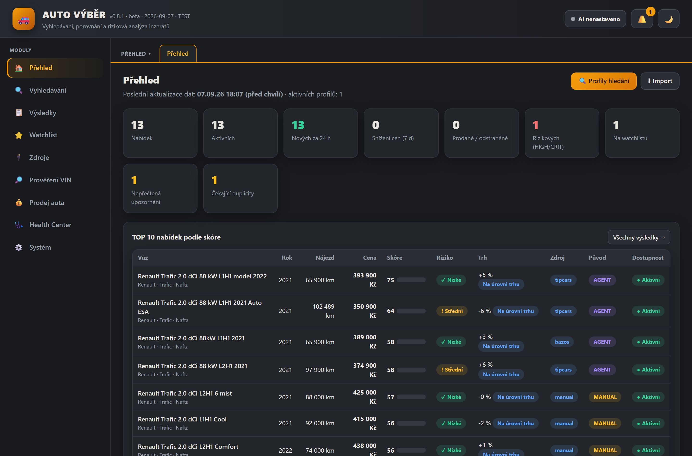
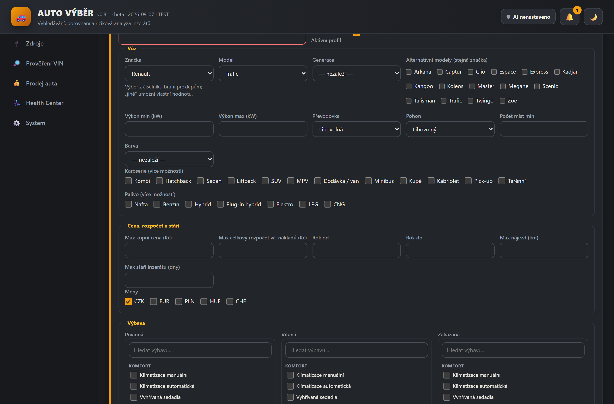
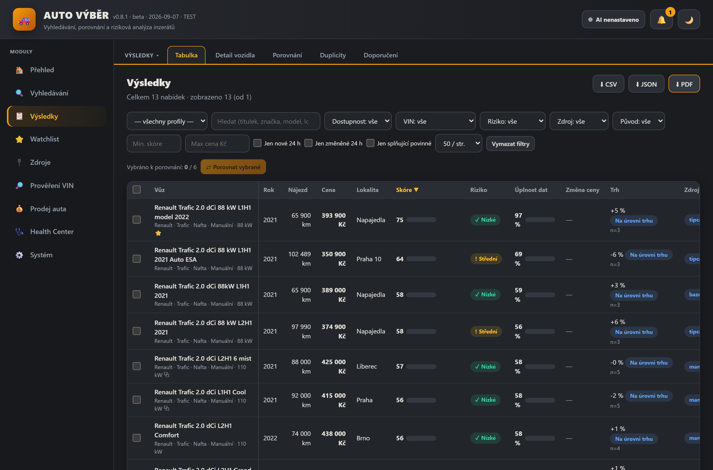
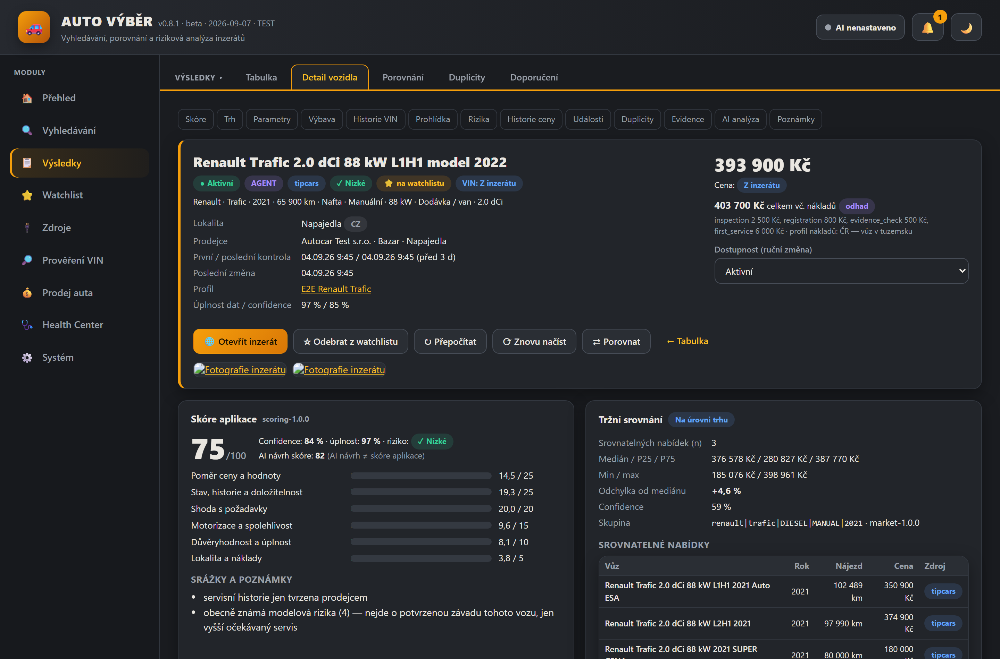
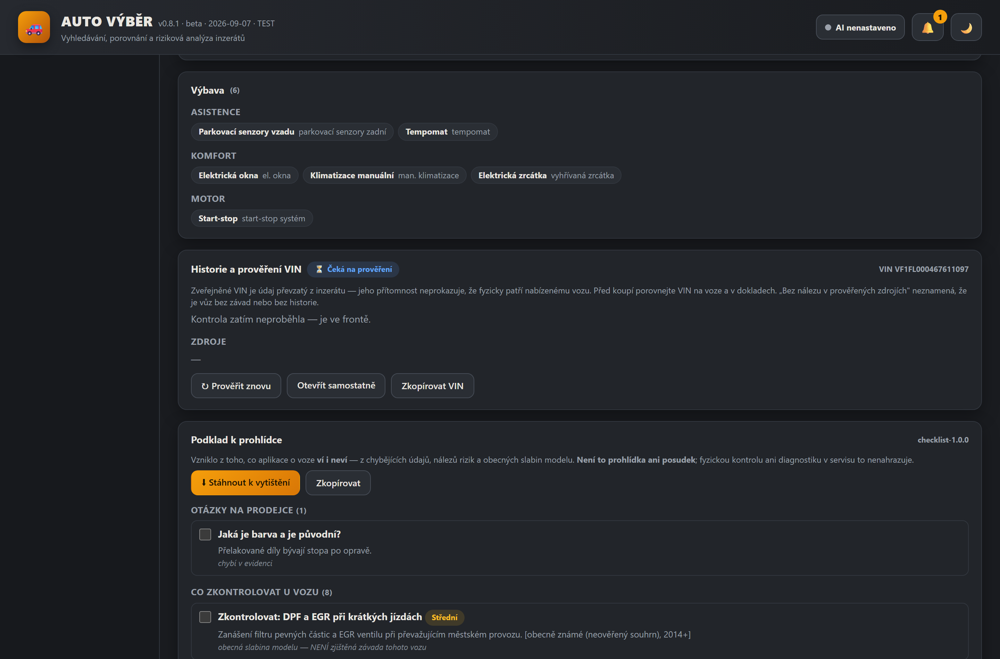
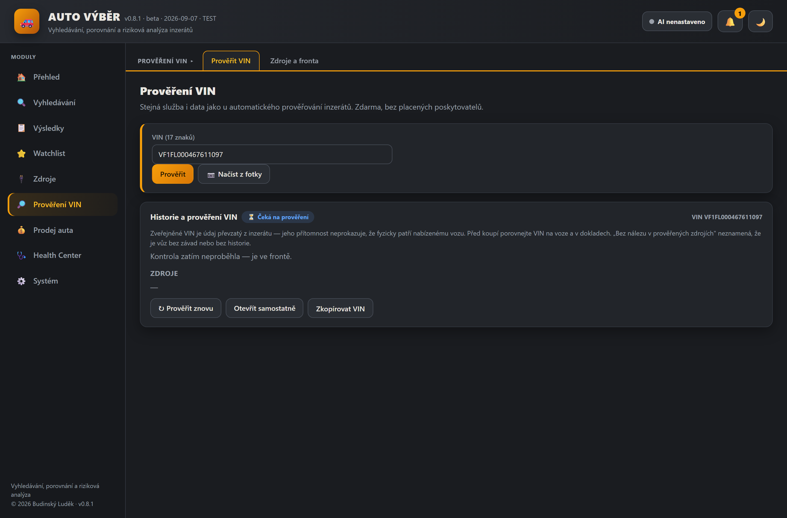

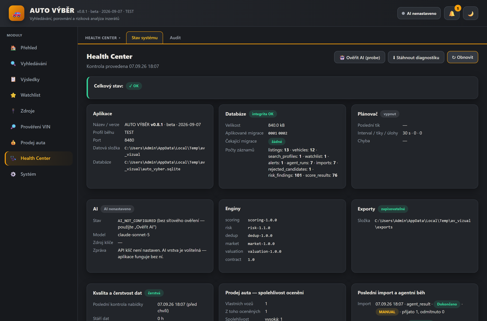
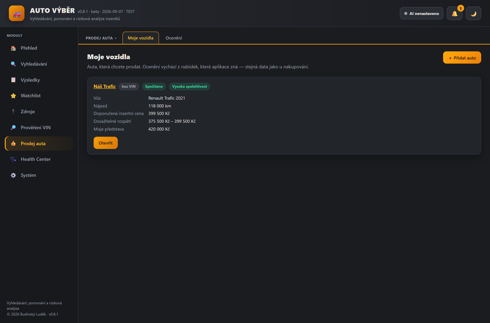
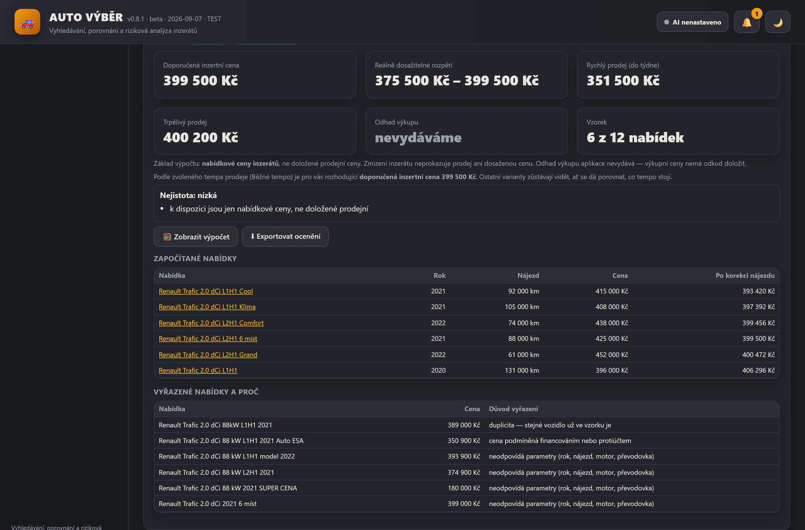
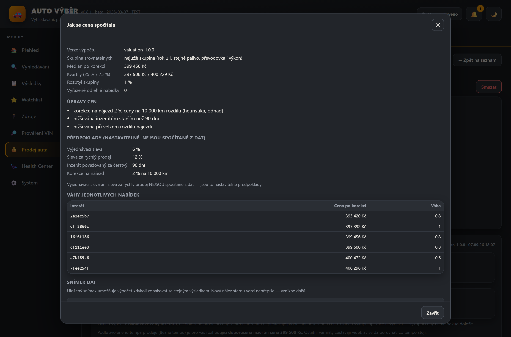
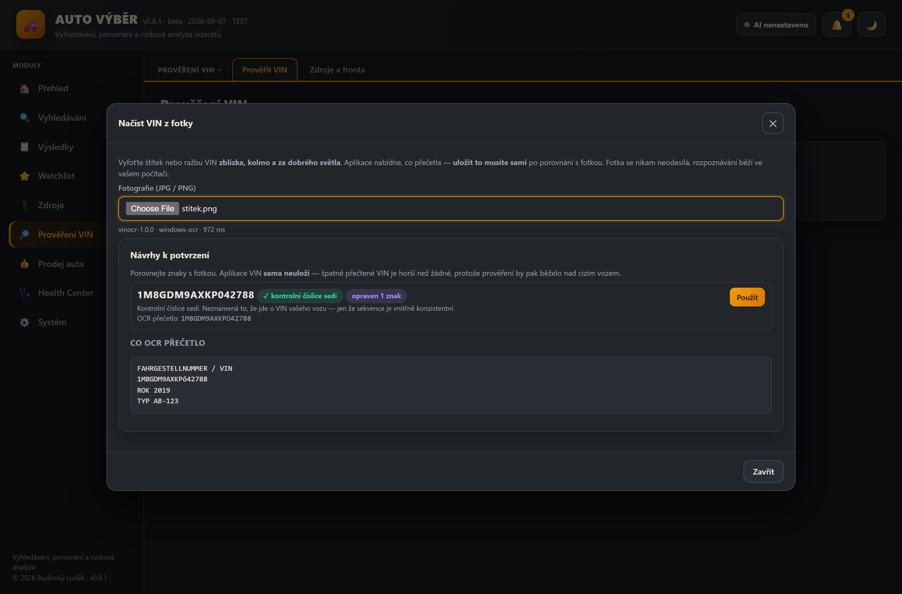
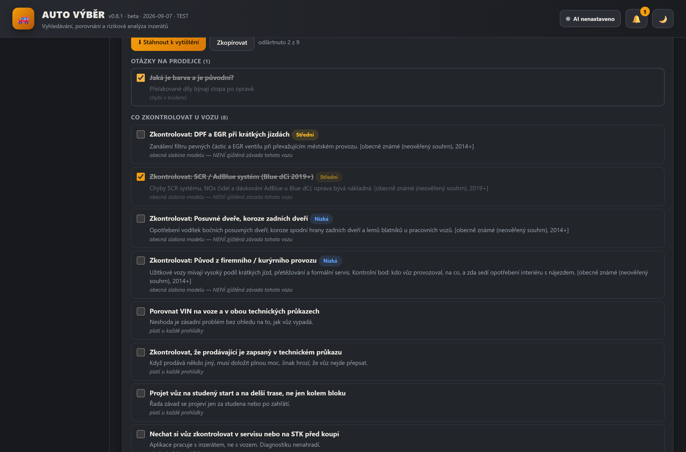
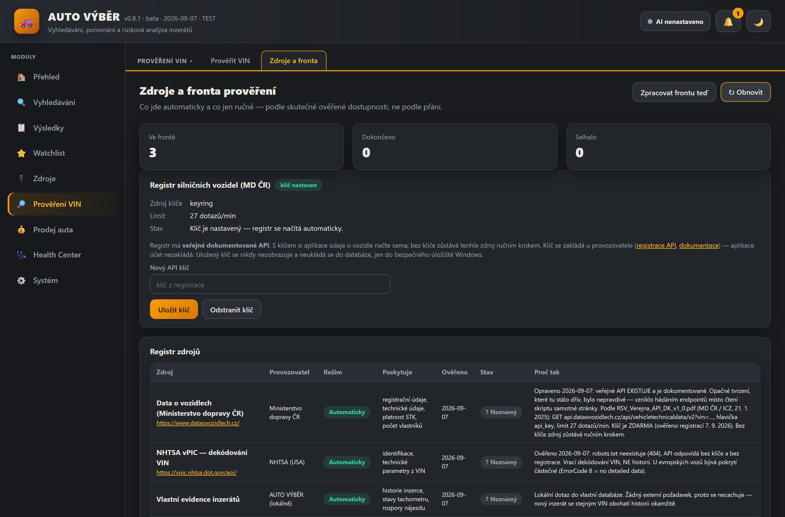
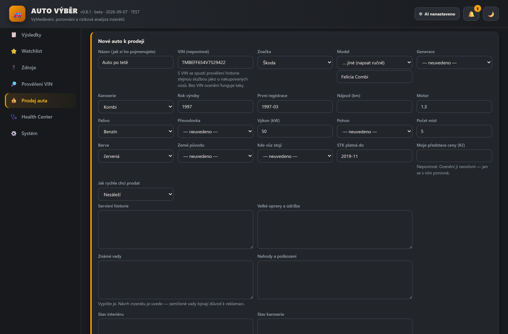
The screenshots use sample (demo) data — real listings and notes on specific cars do not belong on the web.
Status
Beta v0.8.1 (September 2026), 307 automated tests plus a visual check of 20 screens and an interactive walkthrough. Fully standalone — it runs only on my PC in its own window (pywebview), data stays in a local SQLite file, and updates are pulled quietly from my home NAS. Private, with no public hosting and no downloadable installer. It is not an expert appraisal or a vehicle inspection — it is a tool that sorts offers out and, above all, shows what is documented and what is not.
Only partly verified: reading a VIN from a photo has been tried on one real photo of an etched VIN and on rendered plates. One real photo is not a statistic — different light, angle or glare may turn out differently. Two external sources work live: VIN decoding from NHTSA vPIC (not service history) and the Czech vehicle registry, which gives registration and technical data — not service history and not odometer readings. The mapping of the registry's answer is verified on one real car; other cars may have different fields filled in. The odometer check, the police search and manufacturer recalls stay a manual step. The valuation of my own car rests on asking prices, not documented sale prices, which is why it issues no trade-in estimate at all.